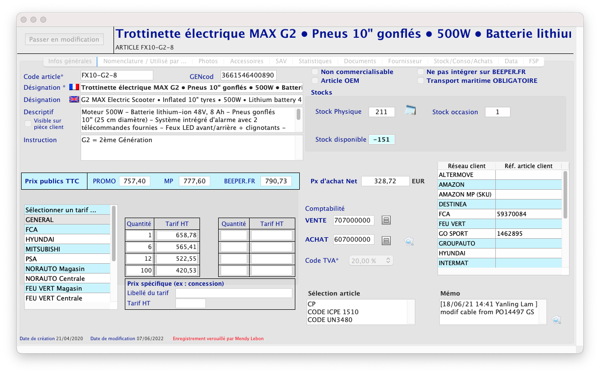

During my internship, I also contributed to improving the company's internal software. In fact, in the company where I did my internship, there was no one person who was fully
involved in developing the company's internal software in response to employee requests. There was only one person who came on site one day a month to make the most important
improvements.
So, during my internship, I was able to focus on certain requests made by employees to improve the internal software. The first was to clear up the clutter in the section
devoted to the product sheets sold by the company. In fact, the information was very compact in relation to each other, which made finding information very complicated.
As a result, I was able to separate the data between those used by the company's sales staff to provide information to customers and the technical data used by the after-sales
service and switchboard.
I was also able to carry out developments for the accounting department, with the addition of a new invoice filter for large companies such as Amazon, who pay for product purchases later than a traditional customer. The creation of an entire system that enables the after-sales service to report all the problems that have been identified over the course of a month, so as to be able to draw up statistics and thus understand the origin of the problems.